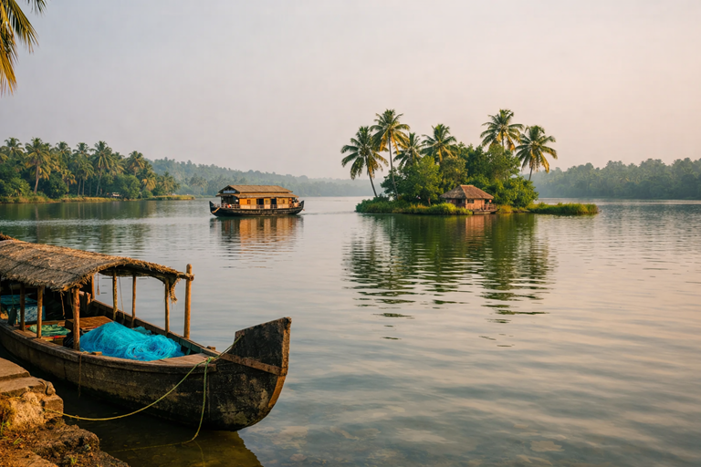
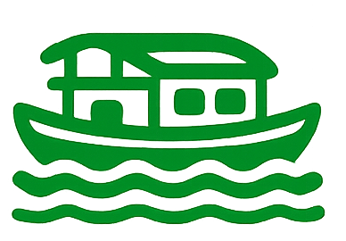
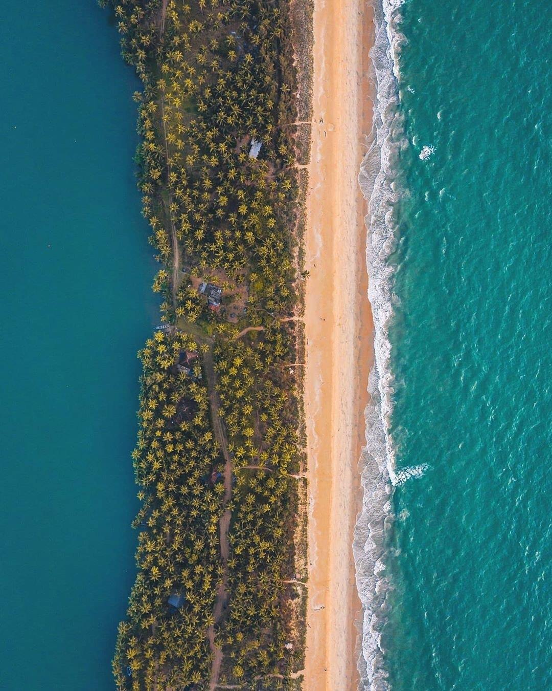

A rare stretch of calm lagoons, island villages, and coastal beauty in northern Kerala.
Located in Payyanur, northern Kerala, Kavvayi is one of the largest and most tranquil backwater systems in the state. Unlike heavily commercial destinations, it remains peaceful, authentic, and deeply connected to village life.
A network of small islands, coconut groves, traditional fishing routes, and open lagoons create a setting that feels untouched and timeless.
Bodhi Backwater Retreat rests along this serene waterline, offering direct access to its calm rhythm.
Kavvayi Backwaters is also featured by Kerala Tourism as one of northern Kerala’s serene backwater regions.

Gentle adventure and slow exploration across the backwaters.

Drift across still lagoons on a traditional Kerala houseboat, watching village life unfold along peaceful shores.
Paddle through narrow canals and hidden inlets, exploring the backwaters at your own rhythm.
Light recreational water experiences designed to complement the calm character of the landscape.
Explore coconut-lined islands and quiet village pathways across Kavvayi’s scattered waterways.
Evenings glow with golden reflections across still waters, offering moments of quiet contemplation.
Observe traditional fishing, coir work, and authentic coastal living along the shores.

Within a short drive from Kavvayi, pristine Arabian Sea beaches offer wide sands, golden sunsets, and refreshing sea breezes.
Guests can enjoy quiet evening walks along the shore before returning to the calm embrace of the backwaters.
Experience the beauty of Kavvayi while enjoying the comfort and serenity of Bodhi Backwater Retreat.
Plan Your Stay